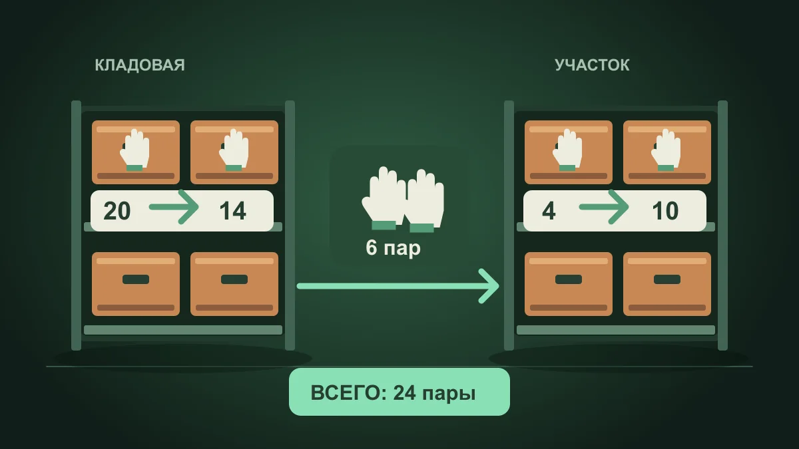

Пример: из кладовой на рабочий участок
Вымышленная мастерская хранит 20 пар рабочих перчаток в кладовой и 4 пары на участке. Нужно передать 6 пар на участок.
| Место хранения | До | Изменение | После |
|---|---|---|---|
| Кладовая | 20 | −6 | 14 |
| Участок | 4 | +6 | 10 |
| Всего | 24 | 0 | 24 |
- Проверьте, что в кладовой есть 6 пар.
- В приложении выберите «Перемещение», исходную кладовую, участок и количество 6.
- После сохранения проверьте 14 пар в кладовой и 10 на участке; общий итог — 24.
- Если 2 пары вернулись, оформите обратное перемещение: участок → кладовая, 2 пары. Итоги: 16 и 8, всего 24.
Когда расходник использован, это уже расход, а не смена места хранения. Не записывайте дополнительную выдачу поверх перемещения. Пустой комплект для мастерской →
Почему два отдельных действия хуже одного перемещения
Если сначала оформить обычный расход, а затем независимо создать новый приход, между этими записями теряется явная связь. При задержке второй операции общий учёт временно показывает меньше имущества, чем есть фактически.
Операция перемещения лучше отражает реальный смысл события: количество меняет место хранения, но остаётся в общей системе учёта.
Практический порядок
- Проверьте исходное место хранения и фактический остаток позиции.
- Выберите целевое место хранения.
- Укажите количество, которое действительно перемещается.
- Сохраните операцию и проверьте остатки в обеих точках.
- Если перемещение связано с документом, добавьте его номер или комментарий по правилам вашей организации.
Как найти ошибку после перемещения
Если итоговое количество не совпало, сначала проверьте историю операций в исходной и целевой точках. Частая причина — повторная запись или отдельный ручной расход, сделанный дополнительно к перемещению.